IV primaria
2031 schede in italiano per la IV primaria, pronte da stampare e con soluzioni.
2.031 materiali
Tema
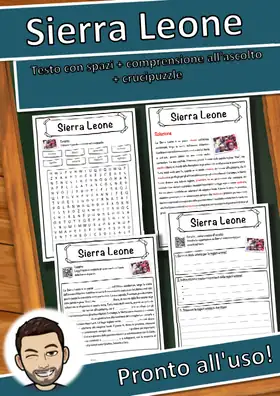
Sierra Leone – Scheda: testo con spazi vuoti, comprensione all'ascolto e crucipuzzle
Siccità – Scheda: testo con spazi vuoti, comprensione all'ascolto e crucipuzzle
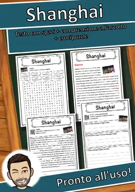
Shanghai – Scheda: testo con spazi vuoti, comprensione all'ascolto e crucipuzzle
Sfera – Scheda: testo con spazi vuoti, comprensione all'ascolto e crucipuzzle
Seven Summits – Scheda: testo con spazi vuoti, comprensione all'ascolto e crucipuzzle
Servizio postale – Scheda: testo con spazi vuoti, comprensione all'ascolto e crucipuzzle
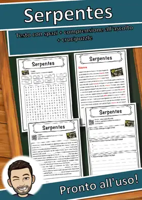
Serpentes – Scheda: testo con spazi vuoti, comprensione all'ascolto e crucipuzzle
Semaforo – Scheda: testo con spazi vuoti, comprensione all'ascolto e crucipuzzle
Selce – Scheda: testo con spazi vuoti, comprensione all'ascolto e crucipuzzle
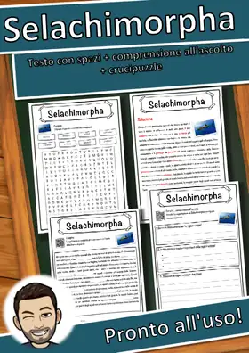
Selachimorpha – Scheda: testo con spazi vuoti, comprensione all'ascolto e crucipuzzle
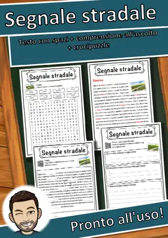
Segnale stradale – Scheda: testo con spazi vuoti, comprensione all'ascolto e crucipuzzle
Seconda guerra mondiale – Scheda: testo con spazi vuoti, comprensione all'ascolto e crucipuzzle
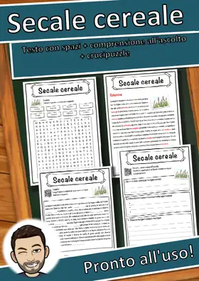
Secale cereale – Scheda: testo con spazi vuoti, comprensione all'ascolto e crucipuzzle
Scuola primaria – Scheda: testo con spazi vuoti, comprensione all'ascolto e crucipuzzle
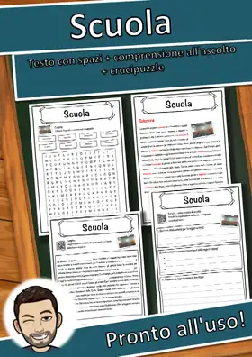
Scuola – Scheda: testo con spazi vuoti, comprensione all'ascolto e crucipuzzle
Schlager – Scheda: testo con spazi vuoti, comprensione all'ascolto e crucipuzzle
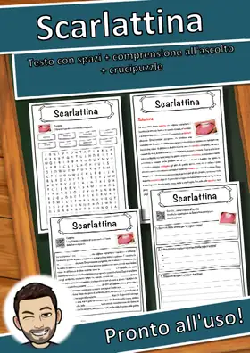
Scarlattina – Scheda: testo con spazi vuoti, comprensione all'ascolto e crucipuzzle
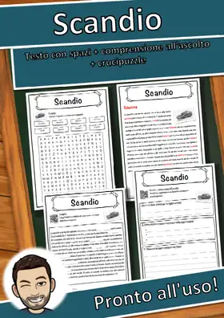
Scandio – Scheda: testo con spazi vuoti, comprensione all'ascolto e crucipuzzle
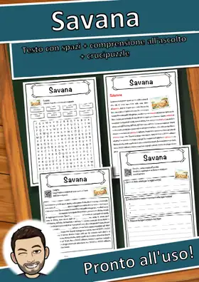
Savana – Scheda: testo con spazi vuoti, comprensione all'ascolto e crucipuzzle
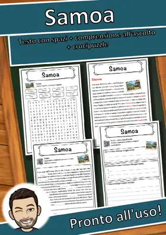
Samoa – Scheda: testo con spazi vuoti, comprensione all'ascolto e crucipuzzle
Sambucus – Scheda: testo con spazi vuoti, comprensione all'ascolto e crucipuzzle
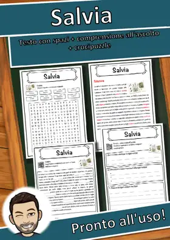
Salvia – Scheda: testo con spazi vuoti, comprensione all'ascolto e crucipuzzle
Salute – Scheda: testo con spazi vuoti, comprensione all'ascolto e crucipuzzle
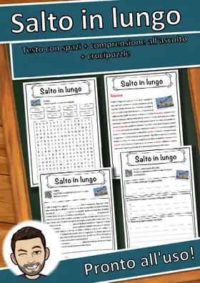
Salto in lungo – Scheda: testo con spazi vuoti, comprensione all'ascolto e crucipuzzle
Salto in alto – Scheda: testo con spazi vuoti, comprensione all'ascolto e crucipuzzle
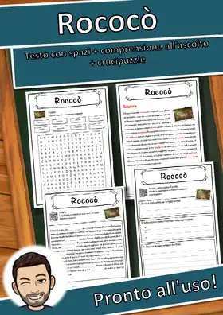
Rococò – Scheda: testo con spazi vuoti, comprensione all'ascolto e crucipuzzle
Rivoluzione industriale – Scheda: testo con spazi vuoti, comprensione all'ascolto e crucipuzzle
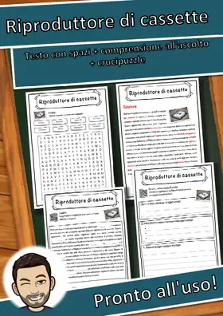
Riproduttore di cassette – Scheda: testo con spazi vuoti, comprensione all'ascolto e crucipuzzle
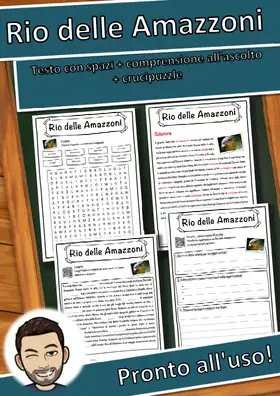
Rio delle Amazzoni – Scheda: testo con spazi vuoti, comprensione all'ascolto e crucipuzzle
Rifugiato – Scheda: testo con spazi vuoti, comprensione all'ascolto e crucipuzzle
Repubblica Dominicana – Scheda: testo con spazi vuoti, comprensione all'ascolto e crucipuzzle
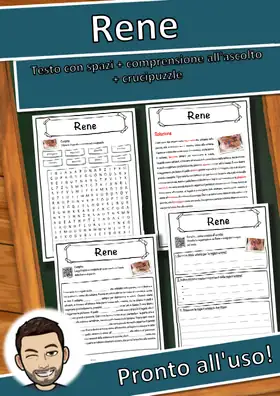
Rene – Scheda: testo con spazi vuoti, comprensione all'ascolto e crucipuzzle
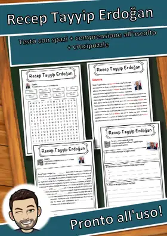
Recep Tayyip Erdoğan – Scheda: testo con spazi vuoti, comprensione all'ascolto e crucipuzzle
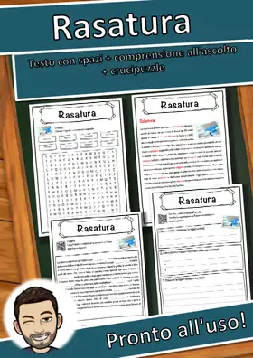
Rasatura – Scheda: testo con spazi vuoti, comprensione all'ascolto e crucipuzzle
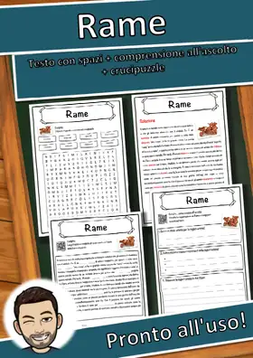
Rame – Scheda: testo con spazi vuoti, comprensione all'ascolto e crucipuzzle
Radiantismo – Scheda: testo con spazi vuoti, comprensione all'ascolto e crucipuzzle
Camerun – Scheda: testo con spazi vuoti, comprensione all'ascolto e crucipuzzle
Cambiamento climatico – Scheda: testo con spazi vuoti, comprensione all'ascolto e crucipuzzle
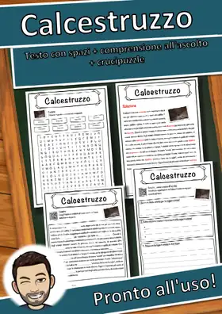
Calcestruzzo – Scheda: testo con spazi vuoti, comprensione all'ascolto e crucipuzzle
Calamity Jane – Scheda: testo con spazi vuoti, comprensione all'ascolto e crucipuzzle
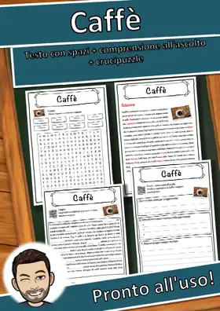
Caffè – Scheda: testo con spazi vuoti, comprensione all'ascolto e crucipuzzle
Cadmio – Scheda: testo con spazi vuoti, comprensione all'ascolto e crucipuzzle
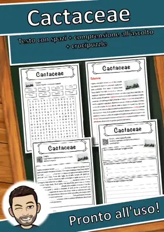
Cactaceae – Scheda: testo con spazi vuoti, comprensione all'ascolto e crucipuzzle
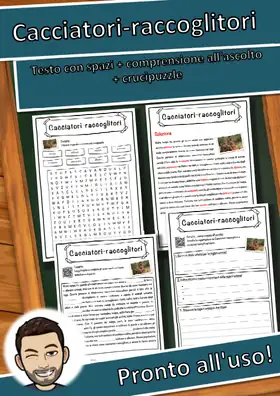
Cacciatori-raccoglitori – Scheda: testo con spazi vuoti, comprensione all'ascolto e crucipuzzle
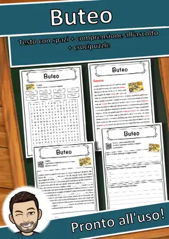
Buteo – Scheda: testo con spazi vuoti, comprensione all'ascolto e crucipuzzle
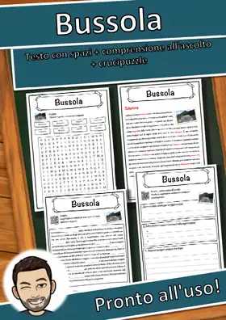
Bussola – Scheda: testo con spazi vuoti, comprensione all'ascolto e crucipuzzle
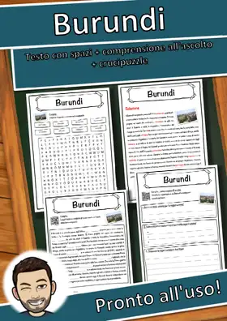
Burundi – Scheda: testo con spazi vuoti, comprensione all'ascolto e crucipuzzle
Burkina Faso – Scheda: testo con spazi vuoti, comprensione all'ascolto e crucipuzzle
Nessun materiale trovato: prova con un'altra parola o un altro filtro.